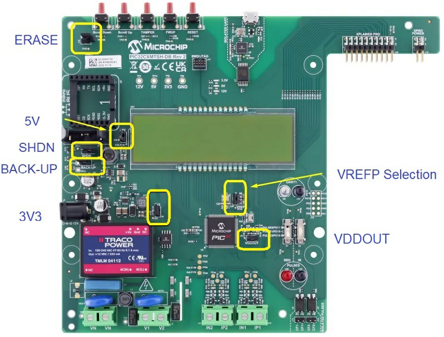
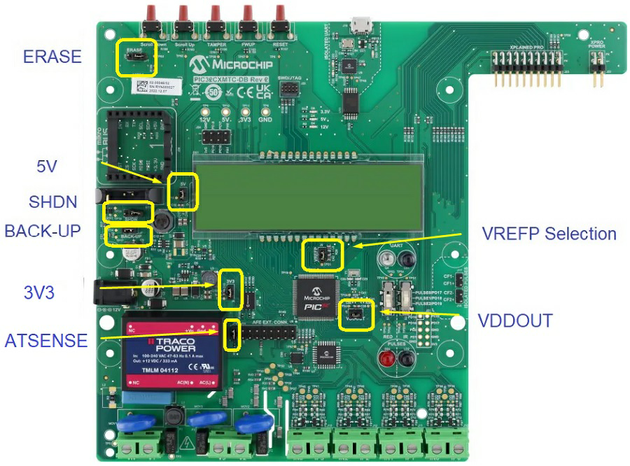

1.3.1.2 Metering Demo Hardware Configuration
Please check the default jumper settings for PIC32CXMTSH-DB and PIC32CXMTC-DB boards, available in the PIC32CXMTSH-DB HW User Guide and the PIC32CXMTC-DB HW User Guide. Users could change the jumper settings according to their specific requirements.
The following image shows the default jumper settings used in the Metering Demo application depending on device:

| Jumper | Setting | Function |
|---|---|---|
| ERASE | Open | Erase pin configuration |
| 5V | Closed | 5V current measurement |
| SHDN | Open | To enable 3.3V and 5V converters despite SHDN command |
| BACK-UP | Closed | 3V3_BACK-UP current measurement |
| 3V3 | Closed | 3.3V current measurement |
| VREFP Selection | Closed | External voltage reference |
| VDDOUT | Closed | VDDOUT current measurement |

| Jumper | Setting | Function |
|---|---|---|
| ERASE | Open | Erase pin configuration |
| 5V | Closed | 5V current measurement |
| SHDN | Open | To enable 3.3V and 5V converters despite SHDN command |
| BACK-UP | Closed | 3V3_BACK-UP current measurement |
| 3V3 | Closed | 3.3V current measurement |
| VREFP Selection | Closed | External voltage reference |
| ATSENSE | Closed | ATSENSE301 |